家門入口、可保留的日常，以及回到原版氛圍的六幕相遇。
走進家門前停留片刻；首次可選擇訪客，之後再綁定帳號。
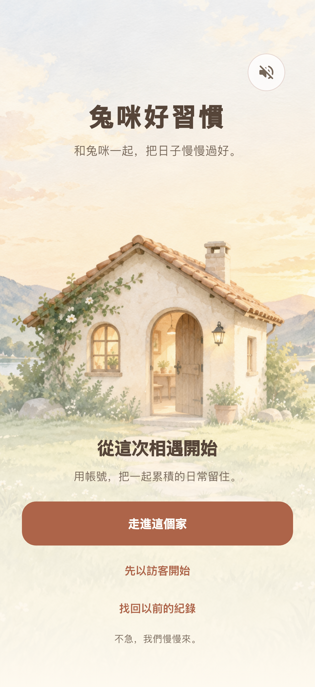
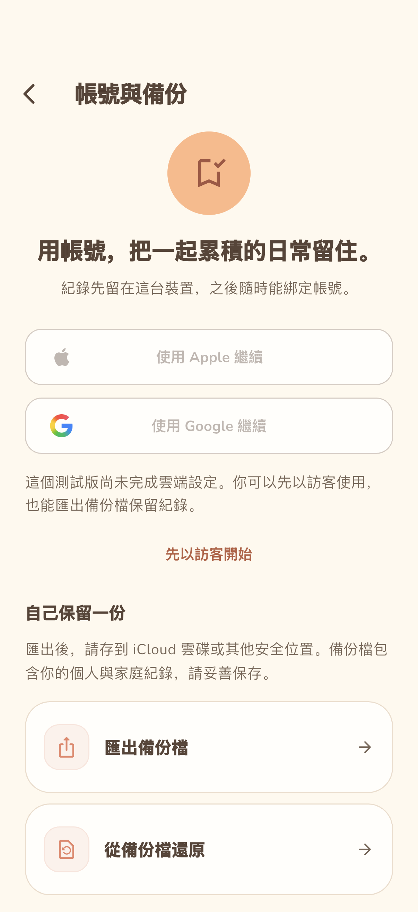
以最原本的滿版暖天空承接故事，留出角色、文字與呼吸的空間。
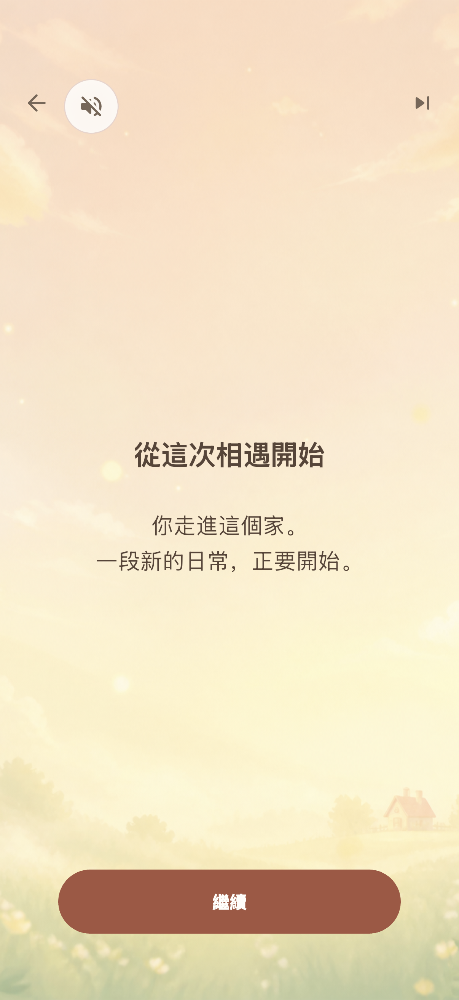
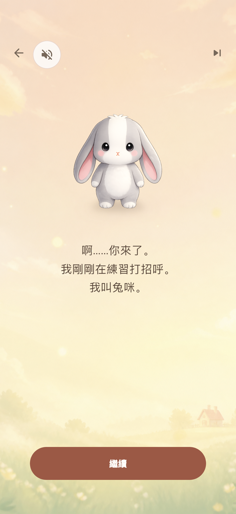
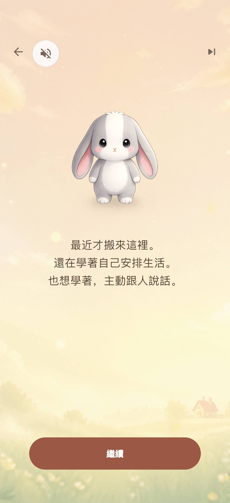
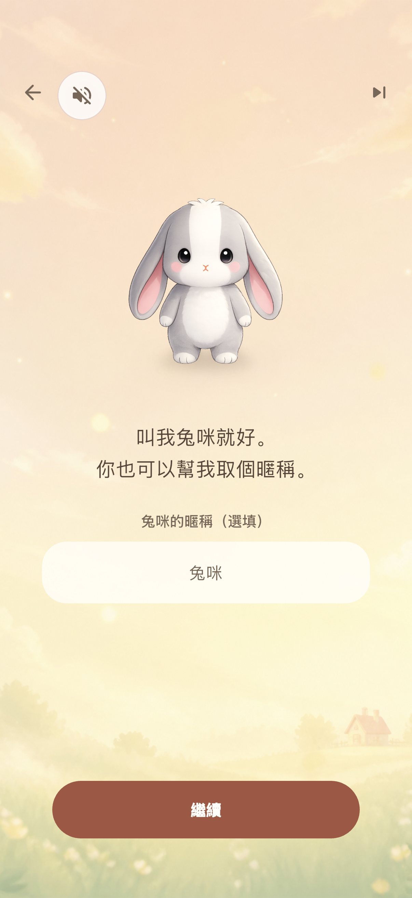
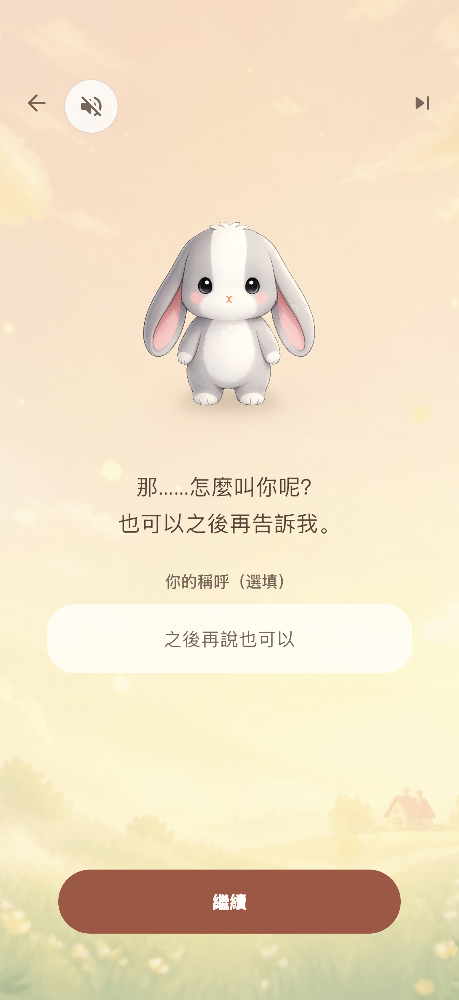
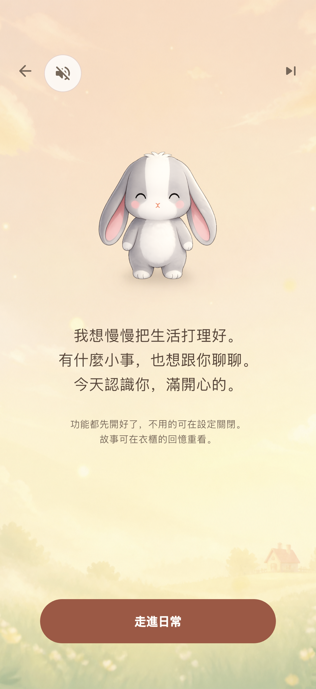
原生截圖中的軟體鍵盤未展開；300 pt 鍵盤與小螢幕由 widget 測試驗證。
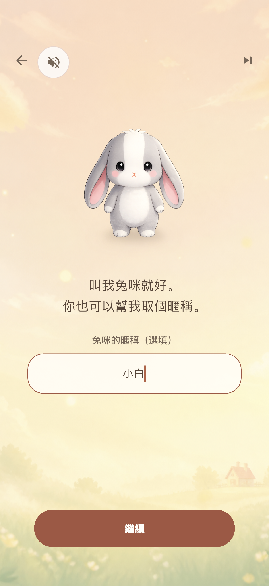
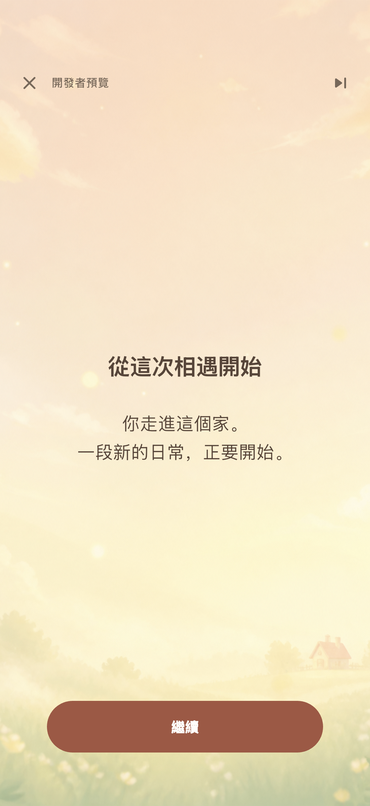
全新訪客完成前導後的六個分頁，功能預設全開。
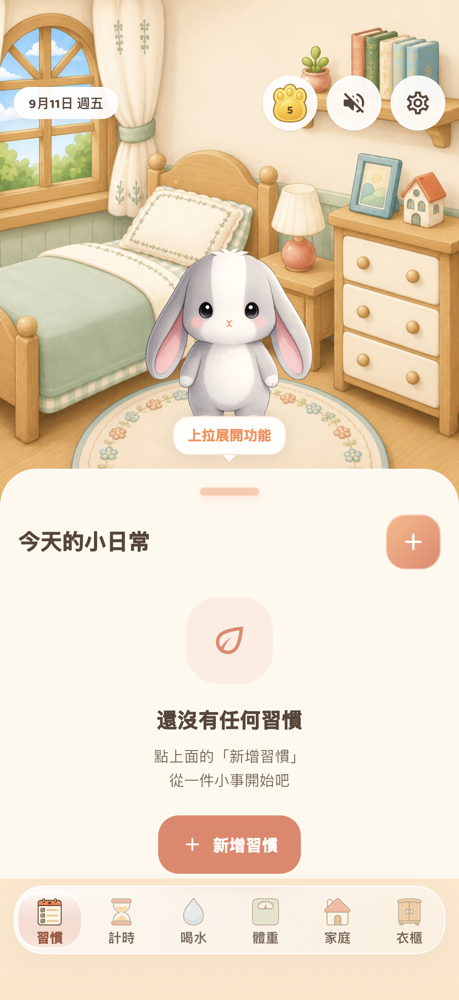
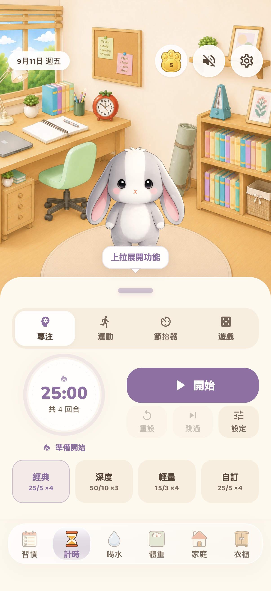
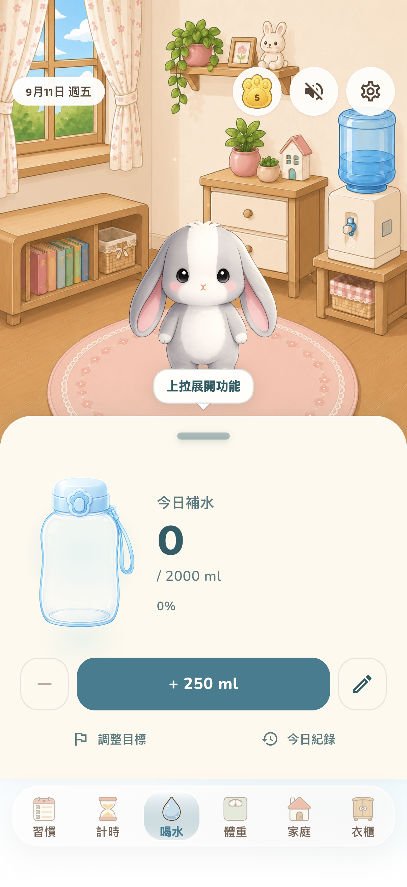
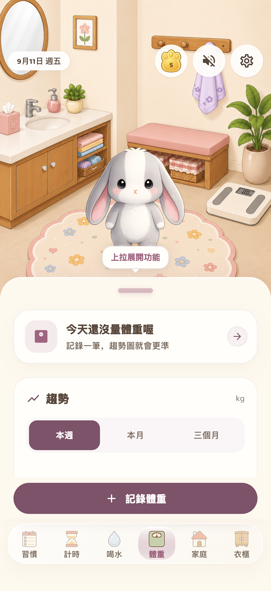
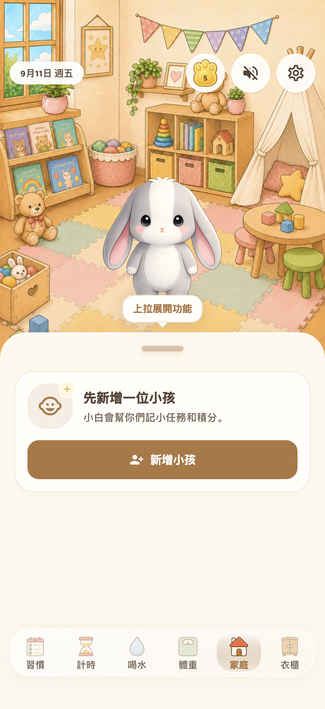
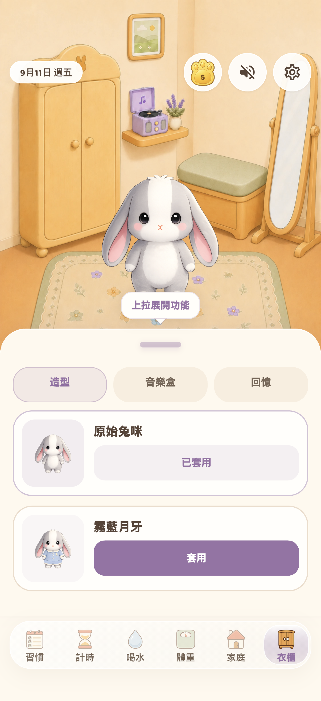
同為 iPhone 17 Pro、402 × 874 pt、繁體中文。舊圖為第一版故事前導；本輪以原版天空承接角色，取消上下分割。
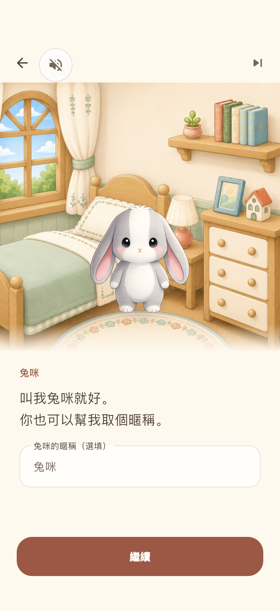